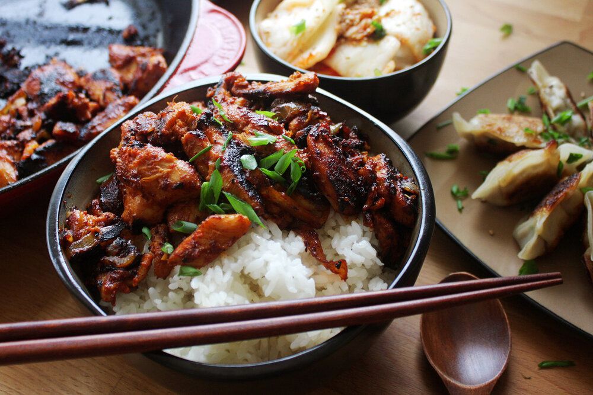

Skillet Chicken Bulgogi

A terrific dinner idea for busy nights!
This is a quick and easy, but very tasty meal. You can substitute the chicken with beef or pork for variety. My wife and I absolutely love this recipe, and it only takes 30 minutes with very few dirty dishes! Serve over rice.
- ¼ cup chopped onion1 English cucumber, cut into matchsticks
- 5 tablespoons soy sauce
- 2 ½ tablespoons brown sugar
- 2 tablespoons minced garlic
- 2 tablespoons sesame oil
- 1 tablespoon sesame seeds
- ½ teaspoon cayenne
- salt and ground black pepper to taste
- 1 pound skinless, boneless chicken breasts, cut into thin strips
- Whisk onion, soy sauce, brown sugar, garlic, sesame oil, sesame seeds, cayenne pepper, salt, and black pepper together in a bowl until marinade is smooth.
- Cook and stir chicken and marinade together in a large skillet over medium-high heat until chicken is cooked through, about 15 minutes.